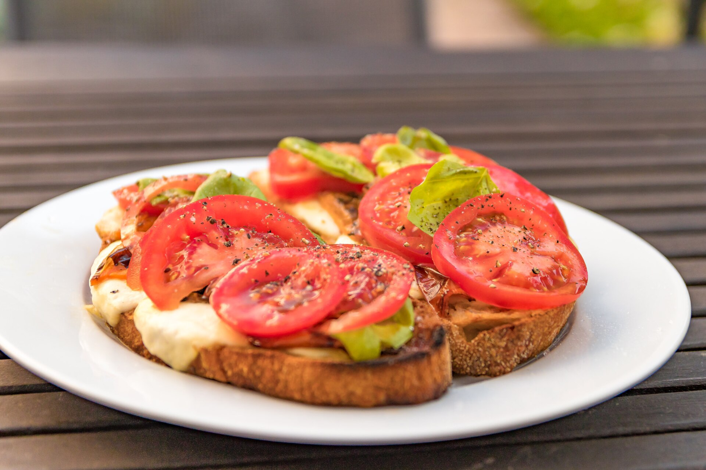

Draft only · noindex,nofollow · PL/EN · P1/P2 remediated
Dieta po urlopie bez detoksu
Lead PL: Dieta po urlopie bez detoksu: powrót do zwykłego rytmu po urlopie, bez karania się detoksem i bez gwałtownego obcinania jedzenia. Ten szkic ma pomóc czytelnikowi podjąć kilka małych decyzji w zwykłym tygodniu, bez obietnic leczenia, bez straszenia i bez planu, którego nie da się utrzymać przy pracy, rodzinie albo podróży.

Najważniejsze wnioski
- Najpierw nazwij sytuację: spokojny powrót do rytmu po wyjazdach, restauracjach i nieregularnych posiłkach.
- Pierwszy krok to: przez trzy dni przywróć stałe godziny śniadania, obiadu i kolacji, a dopiero później oceniaj masę ciała.
- W praktyce oprzyj posiłki o: warzywa do dwóch posiłków, źródło białka w każdym głównym posiłku, woda obok kawy i normalna kolacja zamiast głodówki.
- Nie idź w skrót: największym błędem jest próba odrobienia urlopu jednym ekstremalnym poniedziałkiem.
Po co ten temat
Dieta po urlopie bez detoksu dotyczy przede wszystkim sytuacji: spokojny powrót do rytmu po wyjazdach, restauracjach i nieregularnych posiłkach. Najlepszy punkt wyjścia to zwykły tydzień, w którym da się powtórzyć podobne posiłki i zauważyć, co naprawdę pomaga. Artykuł nie ustawia jednej idealnej diety; porządkuje decyzje, które mają największą szansę być wykonane.
Pierwszy rozsądny krok
Pierwszy krok: przez trzy dni przywróć stałe godziny śniadania, obiadu i kolacji, a dopiero później oceniaj masę ciała. Dzięki temu zmiana jest mierzalna i nie zamienia się w chaotyczne usuwanie produktów. Jeśli po kilku dniach nie da się jej utrzymać, warto uprościć warunki, a nie dokładać kolejne zakazy.
Co realnie położyć na talerzu
W praktyce przydadzą się: warzywa do dwóch posiłków, źródło białka w każdym głównym posiłku, woda obok kawy i normalna kolacja zamiast głodówki. Taki zestaw daje punkt zaczepienia w sklepie i w kuchni. Nie każdy element musi pojawić się codziennie; ważniejsze jest, żeby posiłek miał funkcję: sycić, ułatwiać regularność albo zmniejszać liczbę przypadkowych decyzji.
Zakupy i przygotowanie
Przy zakupach warto wybrać dwie wersje: domową i awaryjną. Domowa może być tańsza i bardziej powtarzalna, awaryjna ma ratować dzień, kiedy plan się rozsypuje. Wtedy czytelnik nie musi wybierać między perfekcją a całkowitym porzuceniem nawyku.
Najczęstsza pułapka
Najważniejsza pułapka: największym błędem jest próba odrobienia urlopu jednym ekstremalnym poniedziałkiem. To szczególnie istotne w treściach zdrowotnych, bo radykalna rada często brzmi atrakcyjnie, ale nie daje lepszego monitorowania objawów ani jakości diety. Lepiej zmienić jeden element i wiedzieć, co się sprawdza.
Plan na najbliższy tydzień
zaplanuj trzy obiady z prostą bazą: ziemniaki lub kasza, białko i gotowe warzywa; zostaw miejsce na jeden posiłek poza domem. Do obserwacji wystarczą trzy sygnały: głód lub sytość, komfort trawienia oraz łatwość powtórzenia planu. Wyniki badań, masa ciała czy objawy przewlekłe wymagają dłuższego horyzontu niż jeden weekend.
Kiedy nie działać samodzielnie
jeśli po urlopie pojawia się silny lęk przed jedzeniem, napady objadania albo kompensowanie posiłków, potrzebna jest rozmowa ze specjalistą. Ten tekst jest edukacyjny i nie zastępuje diagnozy, leczenia ani indywidualnej konsultacji z lekarzem lub dietetykiem.
FAQ
Od czego zacząć przy temacie: dieta po urlopie bez detoksu?
Zacznij od najprostszej obserwacji: przez trzy dni przywróć stałe godziny śniadania, obiadu i kolacji, a dopiero później oceniaj masę ciała. Jedna zmiana daje lepszą informację niż pięć działań wprowadzonych jednocześnie.
Czy potrzebuję specjalnych produktów?
Zwykle nie. Najpierw wykorzystaj proste opcje: warzywa do dwóch posiłków, źródło białka w każdym głównym posiłku, woda obok kawy i normalna kolacja zamiast głodówki. Produkty specjalistyczne mają sens dopiero wtedy, gdy rozwiązują konkretny problem, a nie tylko wyglądają zdrowiej.
Kiedy dieta nie wystarczy?
jeśli po urlopie pojawia się silny lęk przed jedzeniem, napady objadania albo kompensowanie posiłków, potrzebna jest rozmowa ze specjalistą. W takich sytuacjach dieta może być wsparciem, ale nie powinna opóźniać diagnostyki ani leczenia.
Nota bezpieczeństwa
Artykuł ma charakter edukacyjny i nie zastępuje diagnozy, leczenia ani indywidualnej konsultacji medycznej lub dietetycznej. jeśli po urlopie pojawia się silny lęk przed jedzeniem, napady objadania albo kompensowanie posiłków, potrzebna jest rozmowa ze specjalistą
Eating after holidays without a detox
Lead EN: Eating after holidays without a detox: returning to a regular routine after holidays without detox rules or a sudden food cut. This draft helps the reader make a few small decisions in an ordinary week, without treatment promises, scare tactics or a plan that collapses around work, family or travel.
Key takeaways
- Start by naming the situation: spokojny powrót do rytmu po wyjazdach, restauracjach i nieregularnych posiłkach.
- The first step is to restore steady breakfast, lunch and dinner times for three days before judging body weight.
- In practice, build around: vegetables in two meals, protein in each main meal, water alongside coffee and a normal dinner instead of a fast.
- Avoid the shortcut that the biggest trap is trying to compensate for a holiday with one extreme Monday.
Why this topic matters
Eating after holidays without a detox is mainly about this situation: spokojny powrót do rytmu po wyjazdach, restauracjach i nieregularnych posiłkach. The best starting point is an ordinary week in which similar meals can be repeated and patterns can be noticed. The article does not prescribe one perfect diet; it organises the decisions most likely to be carried out.
The first sensible step
The first step is to restore steady breakfast, lunch and dinner times for three days before judging body weight. This makes the change measurable and prevents chaotic food removal. If it cannot be maintained after a few days, simplify the conditions rather than adding more rules.
What to put on the plate
Practical options include: vegetables in two meals, protein in each main meal, water alongside coffee and a normal dinner instead of a fast. This gives the reader a shopping and cooking anchor. Not every element must appear daily; what matters is the job of the meal: fullness, rhythm or fewer random decisions.
Shopping and preparation
For shopping, it helps to choose two versions: a home version and a backup version. The home version can be cheaper and more repeatable; the backup version saves the day when the plan falls apart. This avoids an all-or-nothing choice between perfection and abandoning the habit.
The common trap
The key trap is that the biggest trap is trying to compensate for a holiday with one extreme Monday. This matters in health content because radical advice often sounds attractive but does not improve symptom tracking or diet quality. Changing one element gives clearer feedback.
Plan for the next week
plan three simple dinners built from potatoes or groats, protein and ready vegetables; leave room for one meal out. Three signals are enough to monitor: hunger or fullness, digestive comfort and whether the plan can be repeated. Lab results, body weight and chronic symptoms need a longer horizon than one weekend.
When not to handle it alone
if holidays are followed by strong food anxiety, binge eating or compensatory behaviour, seek professional support. This article is educational and does not replace diagnosis, treatment or an individual consultation with a doctor or dietitian.
FAQ
Where should I start with dieta po urlopie bez detoksu?
Start with the simplest observation: restore steady breakfast, lunch and dinner times for three days before judging body weight. One change gives clearer feedback than five actions introduced at the same time.
Do I need special products?
Usually not. Start with simple options: vegetables in two meals, protein in each main meal, water alongside coffee and a normal dinner instead of a fast. Specialist products make sense only when they solve a specific problem, not just because they look healthier.
When is diet not enough?
if holidays are followed by strong food anxiety, binge eating or compensatory behaviour, seek professional support. In such situations, diet can support care but should not delay diagnosis or treatment.
Safety note
This article is educational and does not replace diagnosis, treatment or individual medical or nutrition advice. if holidays are followed by strong food anxiety, binge eating or compensatory behaviour, seek professional support